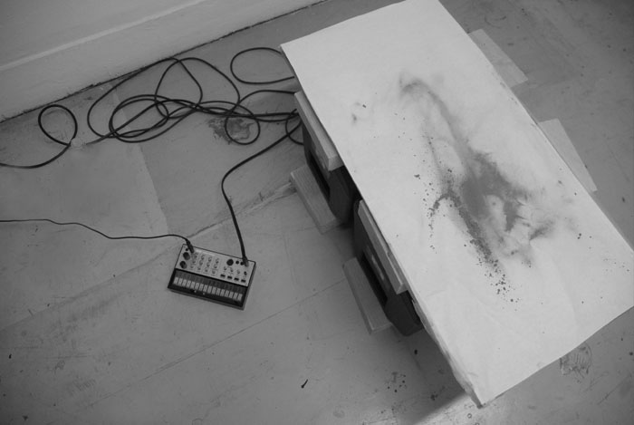

Charlotte, sound and pastel installtion with speakers, wood.
Cymatics (from Ancient Greek: κῦμα, romanized: kyma, lit. 'wave') is a subset of modal vibrational phenomena. The term was coined by Hans Jenny (1904-1972), a Swiss follower of the philosophical school known as anthroposophy. Typically the surface of a plate, diaphragm, or membrane is vibrated, and regions of maximum and minimum displacement are made visible in a thin coating of particles, paste, or liquid.[1] Different patterns emerge in the excitatory medium depending on the geometry of the plate and the driving frequency.
The apparatus employed can be simple, such as the Chinese spouting bowl, in which copper handles are rubbed and cause the copper bottom elements to vibrate. Other examples include the Chladni Plate[2] and the so-called cymascope.